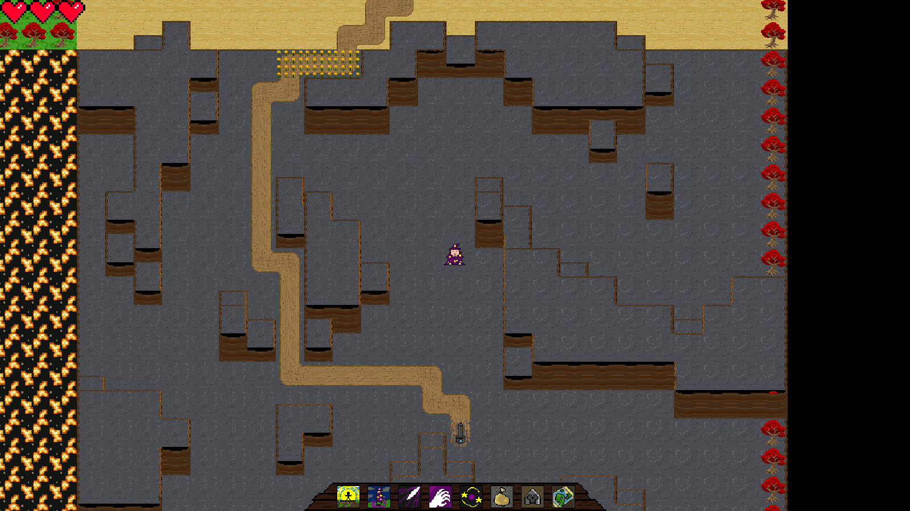

Who am I?
- I am a Danish Citizen
- I am 29 years old
- I did my batchelor and masters at Aarhus University
What do I do?
- I am a working on High Assurance Cryptography (HAC)
- Working on the
hacspeclanguage (subset of Rust) - Making framework for smart contracts and cryptographic primitives and protocols
What do I like?
- I (try to) play violin, bass guitar, harmonica and ocarina
- I am developing a hobby game:

- Doing competitive programming for fun (kattis)
- In my remaining time I play video games (League of Legends)
What have I done?
Teaching
- Infrastructure and Grading for Formal Software Verification
- 2 units of Distributed Systems and Security
- 1 unit of Optimization
- 1 unit of Distributed Systems and Security